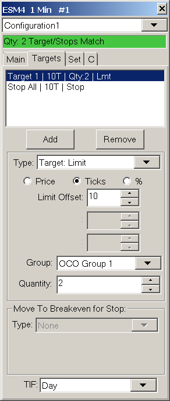

Attached Orders
- Introduction
- Using Attached Orders and Attached Order Settings
- Attached Orders Functionality
- Sending Attached Orders Independently
- Changing Attached Orders Configuration After Parent Order Has Filled
- Using Single Common Stop
- Closing/Reducing Position with Attached Order Interaction
- Attached Orders Examples
- Scaling Out
- Scaling In
- Hiding Attached Orders on Chart Until Parent Fill
- Study Controlled Targets and Stops
- Potential Conditions Which Can Lead to Attached Orders Not Functioning As Expected in Live Trading
- Market Moving Quickly Beyond Stop Price Causing It to Become Invalid
- Automatic Replacement Market Order for Rejected Stop Attached Order
- Failure to Increase Quantity Due to Simultaneous Fill of Target/Stop Order Being Adjusted
- Failure to Increase Quantity Due Order Modification Rejection from Margin/Position Limits
- User Switching to Trade Simulation Mode before Attached Orders Sent
- Using Attached Orders with Attached Orders
- Unable to Modify Price of Attached Orders
- Reversing on Stop Attached Order
- Using DTC Server Feature for Reliable Server Side Attached Orders
- Move to Breakeven Stop Reference Price Calculation and Usage
- Managing Multiple Parent and Attached Order Sets
- Understanding How Server-Side OCO and Bracket Orders Are Implemented with Intermediary Server
Introduction
Attached Orders are orders which are attached to the main order being submitted. These Attached Orders function as price Targets and/or Stops. Most any combination of Attached Orders can be specified to be attached to the main order.
The primary order entered is known as a Parent order and all Attached Orders are known as Child Orders or Attached Orders.
The Attached Orders are always the opposite Side compared to the Parent order. For example, if the Parent order is a Buy order, all the Attached Orders associated with it will be Sell orders.
When there are Stop and Target Attached Orders attached to a Parent order, these orders are in an Order Cancels Order (OCO) group.
A simple example of a Parent order with an attached Stop and Target order is commonly known as a bracket order.
You can have as little as one Attached Order or many. The relationship between the Attached Orders or Child orders themselves are known as siblings.
When there are Attached Orders defined and active, on the Trade Window for a chart or Trade DOM, and you enter an order from that Trade Window or from the associated chart or Trade DOM, these Attached Orders will then be attached to the parent order if they are enabled to be used.
General Management of Attached Orders
The information in this subsection explains the management of Attached Orders when the Trading service does not support server side OCO orders and server side Bracket orders. This information also applies to orders entered when Sierra Chart Trade Simulation Mode is on.
In the case where the Trading service does support server-side OCO orders, also refer to Management of Attached Orders when Trading Service Supports Server Side OCO Only.
In the case where the Trading service does support server-side Bracket orders, also refer to Management of Attached Orders when Trading Service Supports Server Side Bracket Orders.
When a Parent order is submitted, the Attached Orders remain inactive and have a Quantity of 0.
When a parent order is filled, the Attached Orders will become active and at that time are sent to the connected Trading service if Trade Simulation Mode is disabled. Or are processed by the Sierra Chart Trade Simulation system, if Trade Simulation Mode is enabled.
Therefore, in the case of when Trade Simulation Mode is disabled, if you are trading a symbol which is an exchange listed symbol, then most likely the Target and Stop orders are now going to be working at the exchange.
Although potentially the Trading service could be holding them. This might only be the case in the case of a Stop order. When using a Sierra Chart intermediary server for order routing, the Attached Orders are always going to be sent to the exchange without being held on the intermediary server, after the parent order fills.
The Attached Orders will only be submitted to the external trading service, or to the Sierra Chart Trade Simulation system if Trade Simulation Mode is enabled, when there is a notification of a fill of the parent order. This would be considered a real time notification. The Attached Orders are not sent when there is some historical indication of a fill like an order status update that is received later on the order after connecting to the Trading service. For example, if an order filled when Sierra Chart is not connected to the Trading service, and there is some historical indication of a fill, then the Attached Orders will not become active on that type of indication.
It is not regarded as safe, to submit Attached Orders other than from a real-time fill notification. Other notifications could be false in some way based upon experience, will be delayed, and it may not make sense for the orders to be submitted at that time because the Position may not exist any longer, the price of the market will have changed, and Attached Orders may not even be at valid prices, and other numerous reasons. Also in most cases there is not a way for Sierra Chart to know that a parent order filled other than from a real-time notification. There simply is no definite other way to know this which is reliable.
Once the Attached Orders are active, the quantity of the Attached Orders will be equal to the quantity of the parent order unless there was a partial fill of the parent order in which case the Attached Orders will have a quantity equal to the filled quantity of the parent order.
Until the parent fills, the Attached Orders will be inactive and held within Sierra Chart. They will not be sent to the connected Trading service until there is a fill or partial fill of the parent order.
When the Attached Orders are held within Sierra Chart in the case when the server does not support server side Bracket orders or the option to use that is disabled, this is indicated in the Trade Activity Log. In the Trade Activity Log, in the Order Action Source field for the order, client-side managed Attached Orders will contain the text Client side bracket order.
When the Attached Orders are active and the Limit or Stop price for an Attached Order is reached and one of the orders is fully filled, then the other Attached Order, if there is one, in the same OCO (Order Cancels Order) group will be canceled by Sierra Chart.
Partial fills are managed as well. When the parent order partially fills, the Attached Orders will be activated to the quantity of the parent order fill. Likewise, if there is a partial fill of one of the Attached Orders, then the other Attached Order in the same OCO group will have its quantity adjusted down by the amount of the fill rather than being canceled.
Once the Attached Order set is sent to the connected Trading service, it will still be active even if Sierra Chart loses connectivity to the Trading service. In the case where your Trading service does not support server side OCO functionality and Sierra Chart is managing that functionality on your local computer, then those Attached Orders will not have OCO functionality if connectivity is lost to your Trading service.
It is also important to set the Time in Force of the Attached Orders as you require. You can use either Day or Good till Canceled. Refer to Time in Force. If the Time in Force for the Attached Orders is not set to Good till Canceled, then they will be canceled at the end of the day for both simulated and non-simulated trading.
Management of Attached Orders when Trading Service Supports Server Side OCO Only
In the case of when the trading service you are using supports server side OCO, the information in the General Management of Attached Orders applies except for the following:
The Canceling and Quantity adjustment of the other Attached Order in an OCO Group is handled by the Trading service and not Sierra Chart when the other Attached Order (sibling) fills or partially fills.
If a Trading service supports server side OCO orders, it is necessary to enable server side OCO functionality within Sierra Chart by enabling Global Settings >> General Trade Settings >> Use Server Side OCO Orders for them to be managed on the server side.
How do you know whether your Trading service supports OCO functionality? If your Trading service does not provide OCO functionality, then this functionality will be provided by Sierra Chart. You will know if your Trading service supports OCO functionality when you submit an order. In the Trade Activity Log, in the Order Action Source field for the order, server-side managed OCO orders will contain the text Server side OCO order.
You can also look at the service specific page linked from the Data and Trading Services page which states for each service whether the service provides Server Managed OCO (Order Cancels Order) in the What Is Included section on that page.
Management of Attached Orders when Trading Service Supports Server Side Bracket Orders
In the case of when the trading service you are using supports server side Bracket orders, the information in the General Management of Attached Orders does not apply in any way.
If a Trading service supports server side Bracket orders, it is necessary to enable server side Bracket orders within Sierra Chart by enabling Global Settings >> General Trade Settings >> Use Server Side Bracket Orders for them to be managed on the server side.
When using server side Bracket orders, both the Parent and Attached Orders are sent at the same time to the Trading service and after that Sierra Chart has no responsibility for the management of them.
Any action on those Attached Orders would only be in response to actions that you perform manually or through an automated trading system.
The sending of the orders to the exchange, the canceling of them, and Quantity adjustment of the orders is handled completely by the Trading service and not by Sierra Chart. Normally, this will be safer for the management of orders. However, it is not always advantageous to use server side Bracket orders because the management of those orders on the server side by the external Trading service might not be exactly as you would expect as compared to when Sierra Chart is managing them.
However, if you are using a Trading service where there is an Intermediary Server is Used the management of the bracket order will be as you would expect. In this case the Attached Orders will always be managed on the server side and cannot be disabled.
To know if the Trading service you are using supports server side Bracket orders, refer to the service specific page linked on the Data and Trading Services page which states for each service whether the service provides Server Managed Bracket Orders in the What Is Included section on that page.
Also, in the Trade Activity Log, in the Order Action Source field for the order, attached orders will contain the text Server Side Bracket Order if server-side bracket orders are supported. So this is a way to determine whether server side bracket orders are being used.
Handling of Attached Orders when Sierra Chart Intermediary Server is Used
In the case of the following supported Trading services: LMAX and the Teton Order Routing Service, these Trading services use a server managed by Sierra Chart for order routing and the management of OCO and bracket orders.
OCO orders are always managed on the server regardless of how Global Settings >> General Trade Settings >> Use Server Side OCO Orders is set.
Therefore, all order quantity and cancellation management is done on the server. The way in which these OCO orders are managed on the server is exactly the same as Sierra Chart would manage them on the client side.
Bracket orders always reside at the server and are managed on the server regardless of how Global Settings >> General Trade Settings >> Use Server Side Bracket Orders is set.
The Attached Orders are fully managed on the server. Before the parent order partially or fully fills, the Attached Orders are held on the server and are sent to the exchange when there is a fill of the parent order.
The way in which these Attached Orders are managed on the server is exactly the same as Sierra Chart manages them on the client side. Therefore, they work in a known and stable way. Sierra Chart has an excellent track record of managing OCO and Bracket orders on our intermediary servers.
Since this text is from an order update: Teton CME Order Routing (Order update). Info: Order from DTC client #8729. Sierra Chart. xxx.xxx.xxx.xxx | Client text: Attached order. Parent: 505. Tag: 1C_S02_T4.twconfig | Attached Order | Client side bracket order | Client side OCO order. Text: Attached order. It is showing that on the server, it is being managed as a client-side order. It is a server managed order. You can also tell by the status: Pending Child-ServerUsing Attached Orders and Attached Order Settings
Step-By-Step Instructions
The user interface in Sierra Chart for Attached Orders is designed to be very straightforward. The basic concept is that for each Target (Limit order) or Stop (Stop Order) that you want, this will be 1 Attached Order.
If you want to have 2 Targets and a single Stop for the entire position, then this will be 3 Attached Orders.
Refer to the images below for a visual presentation.
- Attached Orders are configured through the Trade Window for a chart or Trade DOM. Go to your chart or Trade DOM. Select Trade >> Open Trade Window for Chart.
It is important to understand that each Chart or Trade DOM has its own Trade Window. You need to make sure you are opening and using the Trade Window belonging to that particular chart or Trade DOM when configuring the Attached Order settings for it.
Also be aware of the Chart Linking feature which also supports linking Trade Windows to keep the settings the same among the linked ones. - You will see the Targets tab on the Trade Window. Select this tab. This is the tab for Attached Orders. Although the tab is named Targets, it also applies to Stop Attached Orders as well.
- If you want to start completely fresh with your own Attached Order configuration, then press the Remove button until all of the Attached Orders in the list box above are removed. Initially, you will normally see 2 Attached Orders already added which make up a simple bracket. There is one Target order and Stop order. You can keep these Attached Orders and modify them as required and add additional ones.
- Press the Add button to add an Attached Order. The Attached Order will be added to the list box above.
- The controls on the Targets tab control the selected Attached Order in the Attached Order list. To modify an existing Attached Order, simply select it from the list box at the top and modify the settings for it by using the controls below the list box. We will explain this in more detail.
- The first step is to set proper Order Type. You can make it either a Target type or a Stop type.
For Stops you have many Stop Order Types to choose from including Trailing Stops.
To make the first Attached order a Target, then select Target: Limit in the Type list. - Each Attached order has one or more Offset controls. The offsets can be specified as an actual Price value, a number of Ticks, or a Percentage of the last trade price. Select either Price, Ticks, or % (Percentage). The default setting is Ticks. For further details, refer to Offset Values.
- In the case of a Target, set the Limit Offset, to the amount from the parent order where you want the Target order to be.
For example, if you are setting it in Ticks, and the tick size for the symbol is .25 and you want the Target to be 2 points from your entry price, then set Limit Offset to 8.
In the case of a Stop, set the Stop Offset, to the amount from the parent order where you want the Stop to be. - Set the OCO Group for the selected Attached Order. By default this should be set correctly. In the case where there are multiple Targets and a single Stop and you want the Stop to protect the entire position, then you will need to set the OCO Group for the Stop Attached Order, to All OCO Groups. In this case the Stop will act as a common Stop for all Targets.
- Set the Quantity for each Attached Order. By default, the quantity should be set correctly. If you are using a single Target and Stop, then this needs to be set to the quantity of the Parent/main order.
- If the Type is set to a Stop order type, and you want to move the Stop to break even based on various conditions, then you need to set the Move to Breakeven for Stop settings as required. Refer to Move to Breakeven for Stop for instructions.
- Repeat the steps 4-11 for each Attached Order you want to add.
- At the bottom of the Targets tab, set the Time in Force for the Attached Orders to either Day or Good Till Canceled.
- To have the Attached Orders you have defined, attached to a new order that you submit, select the Main or C tab and enable Use Attached Orders.
- At this point you are all set and you can now submit an order and the Attached Orders will be attached to it.
{kind=link}
{kind=link}
Attached Order Rules
When you are adding Attached Orders or modifying the controls for Attached Orders, there are certain rules that must be followed. The Attached Orders interface does not allow you to do something which does not follow the rules. If the rules are not followed, you will notice that changing a setting for an Attached Order will not work. The following are the rules:
Attached Orders are grouped into OCO Groups. In the list of Attached Orders you will notice a number after Target or Stop, this will be 1 through 8 or All. This indicates the OCO Group number.
With this understanding, you can only have one Target and one Stop per OCO group, not more. Likewise, there can also be only a maximum of 2 orders per group. These two orders form an OCO pair.
If a Target or a Stop is in the All Groups OCO Group, this counts as one order for all of the other groups 1-8. So if you have a Target 1 and a Stop All Attached Orders, then it will not be possible to add a Stop 1 because Stop All applies to OCO Group 1. There can only be one Attached Order set to All Groups.
For example, if you have 2 orders set to be a Stop and then you try to set the OCO Group for one of them to All Groups, this will not be allowed because each group cannot have more than one Stop order. In this case what you need to do is first set one of the Stops to be a Target instead and then you can change the other Stop to All Groups.
Attached Order Display List
This list box at the top of the Attached Orders (Targets) tab lists all of the attached or child orders that will be attached to a parent order.
Add
Adds a new attached order. After you add this order, modify the settings using the various settings controls. You can have as little as one Attached Order, or many. Refer to the Order Types page for a list of all of the Attached Orders available.
Remove
Removes the Attached Order highlighted in the Attached Order list box.
Order Type (Type)
This is the order type of the Attached Order. See Order Types.
Offset Values
Each Attached Order is specified with one or more offsets. An offset is how far away from the parent order price that the Attached Order price is.
There are different 4 different units to specify an offset (Price, Ticks, Percentage, Actual Price). These offsets are relative to the price of the parent order, unless you are using Actual Price in which case you specify the actual price value. The parent order is the main order that you submit that the Attached Orders are attached to.
In the case where the parent order is a Market order, then these offsets are relative to the current market price (Last trade price).
When the parent order fills, these offsets are then always relative to the fill price since the Attached Orders will be adjusted upon a fill or partial fill of the parent order to maintain the specified offsets in the case when a server side bracket order is not being used and Global Settings >> General Trade Settings >> Adjust Attached Orders to Maintain Same Offset on Parent Fill enabled.
The offsets always entered as positive numbers. The Attached Order feature will automatically convert the offset to the proper price value based upon whether the parent order is a Buy or Sell order and the Attached Order Type.
These are the different ways to specify an Offset value:
- Percentage (%) from the parent order price.
In the case of when using a Percentage (%) for the Attached Order Offset value, the formula is as follows: OffsetPrice = SpecifiedOffsetAsPercent * 0.01 * BasePrice.
BasePrice is the main/parent order price in the case of a non-Market order. In the case of when the main/parent order is a Market order, it is determined from the Quote Data for the symbol. You can see the Quote Data through the Window >> Current Quote Window. In the case of a Sell Market order the Bid price is used for the BasePrice. In the case of a Buy Market order the Ask price is used for the BasePrice.
If there is no Quote Data available and the values are zero, then BasePrice is the last trade price in the chart. The result is rounded to the nearest tick. - Number of Ticks from the parent order price.
- A fixed Price from parent order price.
- Actual Price(1), Price Offset(2-4): This option lets you specify an actual price for the first offset setting and a standard price offset for the second through fourth offset setting.
{kind=link}
How Offsets are Converted
The Limit, Stop and Trigger offsets are converted to a price based on the following rules:
- When the Attached Order type is Limit or Market if Touched and the parent is a Buy: The Offset is added to the parent order price.
- When the Attached Order type is Limit or Market if Touched and the parent is a Sell: The Offset is subtracted from the parent order price.
- When the Attached Order type is Stop, Stop-Limit, or Trailing Stop and the parent is a Buy: The Offset is subtracted from the parent order price.
- When the Attached Order type is Stop, Stop-Limit, or Trailing Stop and the parent is a Sell: The Offset is added to the parent order price.
OCO Group (Group)
Sierra Chart supports 8 different OCO (order canceled order) Groups and the All OCO Groups group.
An OCO (order cancels order) Group consists of 2 orders. This is a Target and a Stop.
When one fills or is canceled, the other will be canceled. If you have just a single target or a single stop and not a corresponding stop or target, then there is no OCO group.
Although the OCO Group setting needs to be specified for each Attached Order regardless.
This setting is for associating Targets and Stops into pairs. Each pair will have its own OCO group unless you are just using a single Target or a single Stop.
If you want to use a common Stop for multiple Targets, then you would set the OCO Group for that Stop order to All OCO Groups and this will split the Stop into more than one order and place one order into each of the OCO Groups used by the other Attached Orders.
The number of orders created from an Attached Order set to All OCO Groups will be equal to the number opposite orders. For example if there is one Stop order set to All OCO Groups, and there are two Target orders set to OCO Group 1 and OCO Group 2 respectively, then there will be two Stop orders. Not more.
When an Attached Order in the All OCO Groups OCO group is split up, the quantity of each of these individual split orders is equal to the quantity of the group that it is placed into. Examples of how this works is explained in the OCO Group Examples section.
The advantage of not using a common Stop when there are multiple Target orders is that the Stop orders can be adjusted independently. Otherwise, they cannot be unless you use the command Remove Link Between Stop Attached Orders which can be added to the Chart Trade Menu.
If you are using more than one OCO Group, then the parent order quantity is split up into individual smaller orders that equal the number of OCO groups used (maximum of 8).
Therefore, if you are using 2 OCO groups, then the parent will be split into two independent orders, that are linked together. The sum of the order quantities for every OCO group must be less than or equal to the parent order quantity. The Target and Stop orders in each OCO group need to have an identical quantity, which happens automatically.
The reason that parent orders and Stop orders for each OCO Group are split into individual orders and are not combined together is for two very important reasons:
1. In the case where there is server side OCO functionality, the orders in each OCO group must have identical quantities.
2. There is a more logical association between orders in an OCO Group when they are independent orders and the orders do not span more than 1 OCO group each.
When Attached Orders are sent to the external Trading service, they are iterated through from top to bottom as they are listed in the Attached Orders list on the Targets tab of the Trade Window. If an Attached Order has a sibling order, the corresponding Target or Stop in the same OCO Group, then as Attached Orders are processed from top to bottom in the list, the sibling order, for the currently being processed Attached Order is located in the list and these are sent at the same time.
Group Quantity
This is the quantity of the Attached Order. All Attached Orders within the same OCO Group must have the same quantity, so this setting specifies the quantity for the entire group.
When the OCO Group setting is set to All OCO Groups for an Attached Order, then its Quantity is automatically set and is equal to the parent order quantity.
When 2 Attached Orders are in the same OCO Group, changing the quantity of one of them will automatically change the quantity of the other to match.
When using a common Stop order to be the Stop order for more than one Target order, then the OCO Group setting needs to be set to All OCO Groups.
Order Quantity Matching
It is necessary that the sum of the Quantity for each of the Target orders or the Stop orders, whichever is greater, must be equal to or less than the main order Quantity set on the Main/C tab. You can easily tell whether there is a match or not, by looking at the status text at the top of the Trade Window. Refer to the images below. Even if there is not a match, as long as the main order quantity is greater, then you can still submit an order.
{kind=link}
{kind=link}
Move to Breakeven for Stop
{kind=link}
The Move to Breakeven for Stop section on the Targets tab of the Trade Window is to set move to breakeven functionality for the Stop Attached Order currently selected in the Attached Order list at the top of the Targets tab.
The Move to Breakeven for Stop settings apply various Move to Breakeven functionality for the selected Attached Stop order. This Move to Breakeven functionality works independently from and in addition to any other functionality the selected Stop order supports like Trailing Stop functionality.
The Move to Breakeven for Stop settings support 2 separate Move to Breakeven actions. These are referred to as Step 1 and Step 2. First Step 1 is applied to the Stop and when that is complete, then Step 2 Move to Breakeven settings are applied.
Instructions
- Add a Stop Attached Order if you have not already and select in the list of Attached Orders at the top of the Targets tab. You can use any Stop order type that you want. For example, you could apply Move to Breakeven functionality to a Triggered Trail Stop-Limit order type.
- Select Step 1 in the Move to Breakeven for Stop frame. Refer to the image.
- Set the Type setting in the Move to Breakeven for Stop frame to the type of move to breakeven action that you want. Refer to the Type description. For the most basic type of move to breakeven action, choose Offset in Ticks Triggered.
- Once you have selected the type that you want, then set the other controls in the Move to Breakeven for Stop frame as required. Review the descriptions below. For the Offset in Ticks Triggered type, you will need to set the Breakeven (BE) Level Offset and the Trigger Offset settings. The Trigger Offset needs to be a positive number.
- Once you have the Move to Breakeven settings as you require, then there is nothing further to do.
- If you want to set a second Move to Breakeven action once the first step has completed, then select Step 2 in the Move to Breakeven for Stop frame and follow the instructions above again starting at step 3.
- For the Move to Breakeven for Stop functionality for Stop Attached Orders to be able to be able to modify the order, it is necessary that the Chart or Trading DOM that the order originated from is still open as well as other conditions. For full details, refer to .
Step 1 / Step 2
This setting controls what particular Step number, 1 or 2, the current Move to Breakeven controls apply to. Once the first Moved to Breakeven step completes, then Step 2 Moved to Breakeven settings apply, if the Type for Step 2 is set to a setting other than None.
Type
The following are the possible types of move to breakeven actions that can be performed on a Stop order type. Choose the one that you require. Depending upon which one you have chosen determines what other settings are required.
- None: When this option is selected, there is no Move to Breakeven action that will be applied to the selected Stop order.
- Offset in Ticks Triggered: When this option is selected and the trigger price calculated from the Trigger Offset setting is reached, then the Stop order will be moved to the breakeven level.
- OCO Group Triggered: When this option is selected and the Target order in the specified OCO Group has partially or fully filled, then the Stop order will be moved to the breakeven level.
- Trail to Breakeven: When this option is selected, the Stop order will immediately begin to trail the market price when the parent order fills or partially fills, and stop at the breakeven level.
- Trail to Breakeven Offset Triggered: When this option is selected, and the trigger price calculated from the Trigger Offset setting is reached, then the Stop order will begin to trail the market price and stop at the breakeven level.
Breakeven (BE) Level Offset
The breakeven level is the parent order fill price. The parent order is the order that the Attached Orders are attached to. This parent order fill price is the breakeven/reference price when the Stop order is moved to the breakeven level.
When using the Scaling-In functionality, this breakeven price is adjusted and uses the weighted-average of the original parent price and the fill prices of the orders used for scaling in. The Breakeven (BE) Level Offset specifies the number of Ticks from this breakeven price that the Stop order will be moved to.
If you specify 1 for the Breakeven Level Offset, the breakeven level price is 100 and the Tick Size is 1, then a Sell Stop will be moved to 101 when triggered.
In the case of a Trail to Breakeven Stop, the trailing action will end when the Stop order gets to 101.
This level offset can be either a positive or negative number. With the preceding example, if you use a offset of -1, then the Stop order will be moved to 99.
The move to breakeven action does not occur if the Stop order is moved beyond the calculated breakeven level. For example, in the case of a Sell Stop order, the Stop order price has to be less than the breakeven level price plus the Breakeven Level Offset for the Stop order to be moved.
Trigger Offset
This specifies the offset in Ticks that the current market price needs to move to from the parent order fill price, to trigger the move to breakeven action. For example if the parent order fills at 100, it is a Buy order, the Tick Size is 1, Trigger Offset is set to 5, then when the market reaches 105 the attached Sell Stop will be automatically moved to the breakeven level.
This Trigger Offset remains the same even after any modification to the Stop Attached Order.
Trigger OCO Group
This setting only applies when you have set the Type to OCO Group Triggered. When the Target order in the selected OCO Group fills, then the Stop order, which will normally be in a different OCO Group, will be moved to the breakeven level. In order for this to work, there must be a Target order defined in the specified OCO Group.
If you are using a single Target order and there is just one OCO Group being used for the Attached Orders, then normally it would not make sense to be using the Move to Break Even for Stop functionality because once the Target order fills, the Stop order is going to be canceled. Although if the Target order consists of a quantity of more than 1, then it can fill at more than one time. Therefore using Move to Break Even for Stop in this case may make sense.
The more typical case, is there are two or more Target orders, and the Move to Breakeven functionality is set on the common Stop order, which is using All OCO Groups, or set on a Stop order which uses a different OCO Group.
Time In Force
It is necessary to set the Time in Force (TIF) for Attached Orders. The setting is at the bottom of the Targets tab of the Trade Window for the chart. Refer to the image below.
{kind=link}
Use Attached Orders
The Use Attached Orders option is found on the Main tab of the Trade Window. When this is enabled, then when you enter an order from the Trade Window, from the chart, from the Chart DOM, from the Trade DOM, or from a Spreadsheet System for Trading auto-trade system, the Attached Orders defined on the Trade Window will be attached to the submitted order.
Each chart or Trade DOM has its own Trade Window. Make certain that you are enabling Use Attached Orders on the correct Trade Window. Go to the chart or Trade DOM and select Trade >> Open Trade Window for Chart to open or activate the correct Trade Window and then on the Main tab, enable Use Attached Orders. For further information about this, refer to Trade Window Settings not Applying to Chart or Trading DOM.
Attached Orders will not be attached to the order when using the Flatten command.
If an order is entered from an ACSIL (Advanced Custom Study Interface and Language) Auto Trade system, then that auto trade system controls whether or not Attached Orders will be used and the setting of this option is not relevant for those automated orders.
Attached Orders will not be attached to the order when reducing the size of your position and there is not a new resulting position, and Support Scale Out is enabled on the Trade Window menu accessed through the Menu/M button on the Trade Window.
If you disable Menu/M >> Support Scale Out on the Trade Window, Attached Orders will be attached to the order even if you are reducing the size of your position or scaling out.
If the Use Attached Orders option is not enabled, then in no case are the Attached Orders attached to any order.
Reversing Position and Attached Orders
If you are reversing your current Trade Position either by using the Reverse button on the Trade Window, which also cancels the current orders, or by using a Market order, Order Quantity and Side (Buy/Sell) which will reverse your Position, then the Attached Orders will be attached to the order which will establish a new Position in the opposite direction. The quantities of these Attached Orders will match the new resulting Position.
For example, if your current position is +5, you enter a Sell Market order with a quantity of 8, then a Sell order of 5 will be submitted without Attached Orders to flatten the existing Position and a Sell Market order of 3 will be submitted with Attached Orders. This only occurs if you are using a Market order.
In the case of a reversal, you need to consider the quantity of the order that establishes a new Position. If the quantity is 1 and your Attached Order configuration consists of 2 Targets, this is not going to work and you will receive an error message.
So you need to define another Attached Order configuration that consist of only a single Target and Stop and save it as a Trade Window Configuration.
You then need to switch to this before you do a reverse. Refer to Using a Preconfigured Attached Orders Set.
Using a Preconfigured Attached Orders Set
To save a Trade Window configuration which includes your currently defined Attached Orders, select M >> Save Configuration on the Main tab of the Trade Window for the chart. Enter or select a File Name and press Save.
To use a saved Trade Window configuration which includes the Attached Orders set, select the name from the drop-down list of saved Trade Window configurations on the Trade Window. Refer to the images below.
Trade Window configuration files are stored in the Sierra Chart Data Files Folder. They have the extension twconfig. You can easily share these files with other users. To find the location of this folder, select Global Settings >> General Settings. The Data Files Folder displays the path to the folder.

|

|
Attached Orders Functionality
When Sierra Chart submits an order, it will first split up the order into the number of OCO Groups you are using. For example, if you are using 3 different OCO Groups, there will be 3 different parent orders (each with the quantity specified with the Group Quantity setting). For more information about OCO Groups, see the OCO Group section. Sierra Chart will manage all of the OCO Groups for you. So even though there are multiple parents due to splitting, you only need to modify or cancel one of them to modify or cancel all of the parents.
Fills
After the parent order is submitted with Attached Orders, the Attached Orders go into a held state until the parent order is filled.
When the parent order fills or partially fills, the Attached Orders are adjusted so that the Attached Order offsets from the parent order fill price are exactly the same as you have specified in the Attached Order settings, if Global Settings >> General Trade Settings >> Adjust Attached Orders to Maintain Same Offset on Parent Fill is enabled.
This adjustment does not occur in the case of Server side managed Bracket orders.
Once the parent order is filled or partially filled, the Attached Orders activate with a quantity matching the filled quantity of the parent order. For example, if a parent order has a quantity of 5, and it partially fills to a quantity of 3 with 2 remaining, then the Attached Orders become active with a quantity of 3 each.
When an Attached Order completely fills, the other order (sibling order) in the same OCO Group is automatically canceled.
If an Attached Order partially fills, then the other order (sibling order) will have its quantity reduced by the amount of the fill.
Cancellations
If the parent order is canceled, assuming it can be canceled, the Attached Orders for it are canceled as well.
If there are multiple parent orders that were split from an original parent order, then when one of those parent orders is canceled, the other parents are canceled along with the Attached Orders for it.
If one of the Attached Orders is canceled, the parent order will not be canceled. The other order in the OCO Group (sibling) will not be canceled either.
Modifications
When the price of a parent order is modified, Sierra Chart will also modify all of the other parent orders that were split from the original order as well.
When the price of a parent order is modified, the Attached Orders for it are also modified to maintain the same offset they had to the parent order previously.
When an Attached Order is modified and it still has a Pending Child status, then the offset that it has to that parent order is updated to the new offset. This offset is used to adjust the Attached Order when the parent order fills so that the Attached Order maintains the identical offset it had to the parent order before the parent order filled.
Sending Attached Orders Independently
Normally, Attached Orders are submitted along with a new order that you enter from a chart, Trading DOM or the Trade Window. This occurs when Use Attached Orders is enabled on the Trade Window for the chart or Trading DOM. However, you may want to send the Attached Orders independently without a parent order.
For instructions to Send Attached Orders independently, refer to Send Attached Orders by Position/Price in the Order Types documentation.
Changing Attached Orders Configuration After Parent Order Has Filled
Follow the instructions below to change the configuration of Attached Orders for a parent order after the parent order has been submitted and filled. If the parent order has not been filled, then just simply cancel the parent order, which will cancel the Attached Orders, and resubmit the parent order along with the Attached Orders configuration that you require.
- For the easy ability to switch among different Attached Order configurations, save each configuration as a Trade Window Configuration.
- Cancel the existing Target and Stop orders. For instructions, refer to Modifying and Canceling Orders on the Chart on the Chart Trading page.
- Select the particular Attached Order configuration you want to use and then use one of the Send Attached Orders Order types.
Using Single Common Stop
To use a common Stop order when there are multiple Target Attached Orders, only add 1 Stop order and set the OCO Group for that Stop order to All OCO Groups.
When this is done, there will be multiple Stop orders created, one for each Target order. After modifying one of these stop orders on a chart or Trade DOM after the are submitted, the other Stop orders in the Attached Order set will be automatically adjusted at the same time.
Refer to the image below.

Closing/Reducing Position with Attached Order Interaction
If you want to immediately close an existing position and cancel the Attached Orders it is recommended to use the Flatten and Cancel operation.
Another method by which you can close fully or partially a position that has a Target and Stop order is to simply modify the price of the Target/Limit Attached Order towards the current market price and slightly beyond it. It will then immediately fill at the current market price.
It is not necessary to move it to a precise price. Simply move it to the other side of the current market price. Opposite from the side the Limit order is on.
You cannot do this with the Stop Attached Order because this type of Stop order modification will get rejected by the exchange.
Attached Orders Examples
This section documents examples of Attached Orders that you can use.
Simple Bracket Example
- Set the Quantity on the Trade Window for the main order, which is known as the parent order, to the required order quantity. For information about submitting an order, refer to Entering an Order from the Trade Window.
- Set the Order Type for the main order.
- Add a Target Attached Order in OCO Group 1. The Type needs to be set to Target: Limit. The Attached Order Quantity will be automatically set.
- Add a Stop (Stop) Attached Order in OCO Group 1. The Type needs to be set to Stop: Stop. The Attached Order Quantity will be automatically set.
- When submitting the parent order, either a Buy or Sell, the above two Attached Orders will be submitted with it. In total there are 3 individual orders linked together in a parent-child relationship. The 2 Attached Orders (Target and Stop) are in a single OCO Group.
{kind=link}
Multiple-Bracket Example
- Go to the Main tab of the Trade Window for the chart or Trading DOM.
- Set the Quantity on the Trade Window for the main order, which is known as the parent order, to the required order quantity. In this case the order quantity must be at least 2.
- Set the Order Type for the main order.
- Go to the Targets tab of the Trade Window. For complete documentation to add Attached Orders, refer to Step-By-Step Instructions.
- Add a Target Attached Order in OCO Group 1. The type needs to be Type: Limit. The Attached Order Quantity will be automatically set and can be manually modified to meet your requirements.
- Add a Target Attached Order in OCO Group 2. The type needs to be Type: Limit. The Attached Order Quantity will be automatically set and can be manually modified to meet your requirements.
- Add a Stop (Stop) Attached Order in All OCO Groups. The type needs to be Type: Stop. The Attached Order Quantity will be automatically set and cannot be changed since the OCO Group is set to All OCO Groups.
- Sierra Chart will send to your connected trading service or to the trade simulation system, 2 OCO group orders as follows:
- The first OCO group order will have a parent order with approximately 50% of the order quantity. Attached to that parent order will be 2 Attached Orders, a Limit and Stop. Each having the same order quantity as the parent order.
- The second OCO group order will have a parent order with the remaining order quantity. Attached to that parent order will be 2 Attached Orders, a Limit and Stop. Each having the same order quantity as the parent order.
- For information about submitting an order, refer to Entering an Order from the Trade Window.
Target with Move to Breakeven and Trail Stop Example
{kind=link}
This example provides detailed step-by-step instructions for both Target and Stop Attached Orders. The Stop will move to the breakeven level after a certain profit amount has been reached on the Trade Position and then trail the market after another set profit amount has been reached.
- Open the Trade Window for the chart or Trade DOM by selecting Trade >> Open Trade Window for Chart on the menu.
- Select the Targets tab.
- In the list box at the top of the Targets tab that lists the Attached Orders, select the topmost order, if any and then press the Remove button as many times as is needed to remove all of the orders from the list.
- Press the Add button. The added order will be a Target.
- Set the Limit Offset to the number of ticks that you want to be filled that away from the entry order.
- Set the Quantity to match the main order quantity. This already should be set properly and will not need to be changed.
- Press to Add button again. The added order will be a Stop.
- Set the Type to Stop: Triggered Trail Stop.
- Set the Stop Offset to the number of ticks that you want the initial stop price to be at.
- Set the Trigger Offset to the number of ticks of profit that you want before the trailing stop action will begin.
- Set the Trail Offset to the number of ticks away that you want to trail the current market price by once the Stop is triggered.
- In the Move to Breakeven for Stops frame, set the Type to Offset in Ticks Triggered.
- In the BE Level Offset box enter 0 to move the stop exactly to breakeven or 1 to move the stop to breakeven +1.
- Set the Trigger Offset (Ticks) to the number of ticks that you want of profit before the stop is moved to the breakeven level.
2 Targets and Common Stop with Move to Breakeven on First Target
The image below is an example of an Attached Order configuration where there are 2 Targets and 1 common Stop. When the first Target has been filled or partially filled, the Stop will move to the breakeven level.
{kind=link}
One Target with 2 Stops with Move to BreakEven on Target 1
The image below is an example of an Attached Order configuration where there is 1 Target and 2 separate Stop orders. When the first Target is filled, the first Stop order is automatically canceled and the second stop order is moved to breakeven.
{kind=link}
Trade Window Configuration File Examples
This section contains Trade Window Configuration files with Attached Order configurations requested by Sierra Chart users. To use these files, follow the instructions in Using a Trade Window Configuration File Provided to You.
It is recommended that you test these Trade Window configurations in Trade Simulation Mode before using them for live trading.
Scaling Out
When Support Scale Out is enabled, there are Attached Orders (child orders) or orders that are in an OCO (order cancels order) group with an Open order Status, you then enter a new order of the same side (Buy/Sell) that is reducing the quantity of your position, and that order fills, then the Attached Orders or OCO orders for the same side will have their quantities reduced by the filled quantity of the new order you entered, or the Attached Orders or OCO orders will be canceled if they have the same or less quantity as the fill quantity of the new order you entered.
To enable Scale Out functionality, select Trade >> Open Trade Window for Chart. On the Main or C tabs press the Menu/M button and make sure there is a checkmark by Support Scale Out. Refer to the images below.
{kind=link}
{kind=link}
You can set whether you want the nearest order or furthest order adjusted using the Scale Out setting in Global Settings >> General Trade Settings.
When Support Scale Out is enabled, and you are reducing the size of your position and not reversing, then Attached Orders will not be attached to the new order even if Use Attached Orders is enabled.
When Support Scale Out is not enabled, then Attached Orders will be attached to the new order that you enter if Use Attached Orders is enabled.
When an Attached Order (child order) or an order in an OCO group is canceled due to a detected Scaling Out condition, then the following message will be added to the Trade >> Trade Service Log: Scale Out: Canceling Child or OCO order due to order fill of same side.
The following two settings in Global Settings >> General Trade Settings affect Scaling Out functionality: Perform Immediate Scale Out with Market Order, Support Scale Out Without Existing Position.
Scaling In
When Support Scale In is enabled on the Trade Window (Menu/M >> Orders >> Support Scale In), there is an existing nonzero Trade Position quantity for the Symbol and Trade Account of the Chart or Trade DOM and there are Attached Orders already Open (not in a pending state), then when you increase the size of the Position with a new order either with a Market order or non-Market order, the existing Attached Orders will be increased in quantity to match the quantity of this new order, when the new order fills and the Position is increased.
In this case, new Attached Orders are not submitted with the new order.
Scaling In does still work even in the case where you have reduced the Order Quantity on the Trade Window to a quantity less than the configured Attached Orders and there is the NoMatch error at the top of the Trade Window.
In this case, that message can be ignored. There is not a need that the new order quantity match the quantity of the Attached Orders since there is a Scale In operation that will be performed.
To use the Scale In function, the following conditions need to be met:
- The Scale In functionality needs to be enabled by selecting Trade >> Open Trade Window for Chart (Refer to Opening Trade Window for Chart or Trade DOM). On the Main or C tabs press the Menu/M button and make sure there is a checkmark by Orders >> Support Scale In.
Make sure you enable this option on the Trade Window associated with the chart or Trade DOM. Refer to the documentation for opening the Trade Window for further information. - There are Attached Orders defined on the Trade Window for the chart.
- Use Attached Orders is enabled on the Trade Window for the chart.
- You are not using Flatten or Reverse.
- You are not using one of the OCO (Order Cancels Order) order types. Example: OCO Buy Stop Sell Stop.
- There are already Attached Orders working on your trade account for the symbol. Attached Orders that are in a Pending Child/Server state are not considered.
- There is an existing Long Trade Position for the same Symbol and Trade Account the new order is submitted for and you are increasing the Long Trade Position quantity.
If the Position Quantity is not correct or is 0, then there will be a problem with the Scale In functionality. Refer to Incorrectly Reported Trade Position Quantity. - Or, there is an existing Short Trade Position for the same Symbol and Trade Account the new order is submitted for and you are increasing the Short Trade Position quantity.
If the Position Quantity is not correct or is 0, then there will be a problem with the Scale In functionality. Refer to Incorrectly Reported Trade Position Quantity. - To control the method of scale in, select Global Settings >> General Trade Settings. In the Scale In setting, choose from one of the following: Nearest Orders, Furthest Orders, Even Distribution-Maintain Ratios, Even Distribution.
When using Even Distribution, the quantity of the new submitted order which will increase the Trade Position, upon a fill will be evenly distributed across the Attached Target and Stop orders until there is no further available quantity.
The Scaling In functionality works under the conditions documented above and can be used no matter how a new order is submitted. This functionality is also supported with automated trading systems including the Spreadsheet System for Trading study.
When an order that meets the scale in conditions fills, the scale in action will be performed. If this order partially fills and there are therefore multiple fills, each one of those fills will cause the scale in action to be performed.
Hiding Attached Orders on Chart Until Parent Fill
When a chart is in Chart Trade Mode, Attached Orders displayed on the chart can be hidden until the parent order fills.
To do this, go to the Trade Window for the chart. For instructions, refer to Opening Trade Window for Chart or Trade DOM.
Press the M/Menu button on the Trade Window. Enable the Hide Pending Attached Orders option on the menu and make sure there is a checkmark by it. When this is done, Attached Orders will not be displayed on the chart until the parent order fills and they become working.
Study Controlled Targets and Stops
Description
Sierra Chart provides a study named Trade Management By Study. This study will modify an existing working Target or Stop Attached Order for the symbol of the chart to match the most recent value of a selected Study Subgraph in a study.
This Study Subgraph is used to set the order price of the Target or Stop. An offset from this Study Subgraph is also supported. The Line study can also be referenced and you can set the level of the line through is Study Input.
The nearest Target or Stop order is considered the one nearest to the current trade price.
The study monitors the chart for Open Attached Orders (Targets or Stops). These are Attached Orders that are currently Open due to a parent order that was previously filled. The orders must have a Status of Open for them to be modified by this study.
If no orders exist, the Trade Management By Study will not do anything. These Target and Stop Attached Orders can also have originated from a different chart.
Once an Open Target or Stop is found, then based on the most recent value of the selected Study Subgraph, the Trade Management By Study study will continuously modify the order price to match.
If you want to control both the Target and Stop according to a Study Subgraph, then you can add two Trade Management By Study studies to the chart and set one to control the Target and the other one the Stop. This is done through the Order Types to Manage Input with the study.
Full source code for the study can be found in \ACS_Source\AutomatedTradeManagementBySubgraph.cpp in the folder that Sierra Chart is installed to. This is an ACSIL study. You can modify this study to meet your requirements.
Instructions
- Select Analysis >> Studies on the menu.
- Add the study named Trade Management By Study. For additional details to add a study to a chart, refer to Adding/Modifying studies.
- Press the Settings button.
- Select the Settings and Inputs tab.
- Set the Enabled input to Yes.
- Set the Order Type To Manage input to Stops or Targets depending upon whether you want to adjust a Stop or Target order.
- Set the Controlling Subgraph Reference input to the particular Study and Study Subgraph that will control the Target or Stop. The Study Subgraph is a particular line/plot within a Study. First select the Study and then the particular Study Subgraph within that study. The study must be on the same chart.
- Set the Trailing Offset (in Ticks) input, to the number of ticks away from the controlling Study Subgraph that the order should be when it is modified.
- Set the ACS Control Bar Button # for Enable/Disable Input to the Control Bar Button number you can use to enable and disable the study. More details on this are explained in a further down step. This step is optional.
- Set the Position Type input to All Positions, Long or Short to indicate the type of positions you want to this study to be active on.
- Press OK. Press OK.
- Select Global Settings >> Customize Control Bars >> Control Bar 1-8 on the menu.
- Expand the Available Control Bar Commands >> Advanced Custom Study Buttons sublist. Add a Custom Study Button # to the Selected Control Bar Commands list. The # after Custom Study Button # represents the number that you set for the ACS Control Bar Button # for Enable/Disable Input.
- If the Control Bar is not visible, select Window >> Control Bars >> Control Bar 1-8. There will be a button on the Control Bar named TMS which can be used to easily enable and disable this study.
- When this study is enabled, and there is an open Target or Stop order, it will be modified to track the controlling Study Subgraph.
- If a Target or Stop order is not modified, then set the Detailed Logging (for debugging) input to Yes. This will cause messages added to the Window >> Message Log indicating the reason for the problem. Refer to the Study Input Settings section for further details.
Trade Management by Study Input Settings
- Enabled: Enables or disables this study. When this is set to No, then the automatic modification of the found Stop or Target order will not be performed.
- Order Type To Manage: Select to either manage Stops or Targets. If you need to manage both at once, add the study twice.
- Controlling Subgraph Reference: A reference to the Study and the Subgraph of that study which controls the order price.
- Order Adjustment Timing: Determines when or how often to modify the Target or Stop order. Supports two methods On Bar Close and Every N Seconds.
- On Bar Close: Will use the referenced study Subgraph value at the previous bar in the chart.
- Every N Seconds: Will use the referenced study Subgraph value of the most recent bar in the chart at the frequency specified by Adjustment Frequency (in Seconds).
- Adjustment Frequency (in Seconds): The minimum interval in seconds between order modifications. Only relevant if Every N Seconds is selected for the Order Adjustment Timing input.
- Trailing Offset (in Ticks): The offset in Ticks (Chart >> Chart Settings >> Tick Size) which the order trails the controlling Study Subgraph by.
A positive or negative value can be used for Trailing Offset.
For a Long position, the order being controlled would be a Sell order. In this case, the Trailing Offset value is subtracted from the Study Subgraph value. As an example, if the Study Subgraph is a Moving Average, a positive value for the offset would trail the order N ticks below the Moving Average. A negative value would trail the order N ticks above the Moving Average.
For a Short position, the order being controlled would be a Buy order. In this case, the Trailing Offset value is added to the Study Subgraph value. As an example, if the Study Subgraph is a Moving Average, a positive value for the offset would trail the order N ticks above the Moving Average. A negative value would trail the order N ticks below the Moving Average. - ACS Control Bar Button # for Enable/Disable: This is the Advanced Custom Study (ACS) Control Bar button number to be associated with this study to enable and disable the order modifications. To add this button to the Control Bar, refer to Customize Control Bars.
These buttons are listed under Global Settings >> Customize Control Bars >> Control Bar # >> Available Control Bar Commands >> Advanced Custom Study Buttons >> Custom Study Button #. The # after Custom Study Button # represents the number that you set for this Input. - Position Type: This can be set to All Positions, Long or Short to indicate the type of Trade Positions you want this study to be active on. In other words it will only modify Attached Orders, when the selected Trade Position type is in existence for the Symbol and Trade Account of the chart.
- Detailed Logging (for debugging): When this input is set to Yes, then any time an order adjustment does not occur, a message indicating the reason is added to the Window >> Message Log. This is useful to determine the reason for the problem. A message is only added once per reason. So if the same reason occurs again, a new message will not be added.
- Only Modify Stops In One Direction: When this Input is set to Yes and the Attached Order being modified is a Stop order, then in the case of a Short Trade Position, the Stop order will only be modified to a lower price and not to a higher price. In the case of a Long Trade Position, the Stop order will only be modified to a higher price and not to a lower price. When this Input is set to No, then a Stop order can be modified in either direction.
- Allow Zero Values: When this Input is set to Yes, then zero values will be used from the controlling Subgraph to adjust the order. Otherwise, this is not the case.
- Allow Negative Values: When this Input is set to Yes, then negative values will be used from the controlling Study Subgraph to adjust the order. Otherwise, this is not the case.
- Allow Custom 'Properties' for Control Bar Button: When this Input is set to Yes, then the ACS Control Bar Button specified by the ACS Control Bar Button # for Enable/Disable Input can use its own custom properties.
Refer to Control Bar Button Properties. - Attached Order to Manage: This Input controls what particular Attached Order the Trade Management study will control. This can either be the Attached Order nearest the current price, or one in the specified OCO Group number.
Potential Conditions Which Can Lead to Attached Orders Not Functioning As Expected in Live Trading
This section documents specific cases where Attached Orders may not always function as expected. Do know that these are uncommon conditions. In simulated trading, these conditions cannot occur.
Market Moving Quickly Beyond Stop Price Causing It to Become Invalid
Example Scenario: You have an attached Sell Stop order that has been submitted with your main parent buy order.
The parent order that the attached Stop order is attached to, fills and then the market moves quickly against your resulting position.
When the Stop order is transmitted on a fill of this parent, the market price has already moved below the Sell Stop order price.
Normally exchanges will reject Sell Stop orders with a price which is at or above the current market price. Likewise in the case of a Buy Stop order. A Buy Stop order can be rejected if it is at a price below the current market price.
This is an example of the rejection: Sell order stop price must be below last trade price (this is an exchange level rejection).
This type of scenario only happens when you use a tight Stop, the market is moving quickly against your entry order, and the exchange has rejected your order.
The first and primary solution to a problem like this is to use the Sierra Chart Order Routing Service to have very low latency management of your Attached Orders, so they are sent to the exchange in less than 1-2 milliseconds after the parent fill, usually, rather than a much longer delay when they are managed on the Sierra Chart client side. We cannot emphasize enough the benefit of using this service compared to other services like CQG.
Another solution to this problem is to use the Automatic Replacement Market Order for Rejected Stop Attached Order functionality.
Automatic Replacement Market Order for Rejected Stop Attached Order
When Global Settings >> General Trade Settings >> Auto-Send Market Order On Rejected Stop Attached Order is enabled and a Stop Attached Order is Rejected after being sent and originally had an Order Sent status, it will be resent as a Market order to offset the new position established by its parent order.
There are many safeguards in place to ensure that this market order is only sent when there is a rejected Stop Attached Order and when there is an actual established Trade Position from the original parent order.
When this market order fills, any Target order that also exists will be canceled. This feature does not work with Interactive Brokers due to the proven uncertainty of order statuses with that service.
Failure to Increase Quantity Due to Simultaneous Fill of Target/Stop Order Being Adjusted
Example Scenario: There are Attached Orders attached to a parent order. The parent order has a quantity of 10 for example.
The parents fills in 2 lots of quantities of 5 each. The Attached Orders are transmitted with an initial quantity of 5 each to match the first fill of 5.
These Attached Orders, then need to be modified to a quantity of 10 each due to the second parent fill of 5. Each of these order modifications are pending until the initial order transmission that they are trying to modify has been acknowledged and the initial Attached Order goes into an Open state.
When an Attached Order goes into a Open state and there is a pending modification, that modification is then performed. So therefore the quantity of each Attached Order is increased to 10 individually at the time when the Attached Order has become Open.
However, say the market price moves and then fills one of those Attached Orders that we are modifying and it fills before the modification is actually performed and that modification is rejected.
For example, the Target order got filled before it could be increased to 10, then you no longer have a Target order in place since the modification to increase it to 10 failed.
The solution to this is to enable Global Settings >> General Settings >> Reactivate Attached Order when Rejected Modification During Fill.
Failure to Increase Quantity Due Order Modification Rejection from Margin/Position Limits
Example Scenario: There are Attached Orders attached to a parent order. The parent order has a quantity of 10 for example.
The parent order fills either all at once or in multiple fills. The Attached Orders are transmitted with an initial quantity equal to the first fill of the parent order. If the parent order completely filled all at once, then the Attached Orders will have the full quantity at this point in time.
If necessary, the quantity of the Attached Orders are increased to match any additional fills that may occur in the parent order, assuming the parent did not fully fill the first time.
However, there is one potential problem. The initial transmission of the Attached Orders or the modification to increase the quantity of the Attached Orders, gets rejected due to a Position limit on your account, or insufficient margin to meet margin requirements. These rejections will be logged in the Trade Activity Log.
The solution to is to contact the risk management of your trading service and have them increase your position limits, reduce margin requirements or increase your account balance to meet the margin requirements.
User Switching to Trade Simulation Mode before Attached Orders Sent
In the case of non-simulated trading, if Attached Orders are managed on the client-side and the Trading server does not provide server side OCO or bracket order support, then until the parent order fills, the Attached Orders are held on the client-side within Sierra Chart.
For more information, refer to General Management of Attached Orders.
Therefore, before the Attached Orders have been sent to the connected Trading server, if you were to enable Trade >> Trade Simulation Mode On before the parent order has filled, and the parent order fills while Trade Simulation Mode is enabled, the Attached Orders will not be sent to the connected Trading server because Trade Simulation Mode prevents any non-simulated trading.
Using Attached Orders with Attached Orders
It is not supported to use Attached Orders which are attached to another Target or Stop Attached Order.
Instead what you need to do is submit a new independent order at the same price and side as the existing Target or Stop order and that new order needs to have its own Attached Orders.
This order can be entered using the Chart DOM, Chart Trading or through the Trade Window.
Unable to Modify Price of Attached Orders
When modifying the Price or Quantity of an Attached Order before the Parent order has filled and it does not change, then the usual case for this problem is that server side Bracket orders are being used and the Trading service Sierra Chart is connected to, is not allowing the modification.
The solution to this is to uncheck Global Settings >> General Trade Settings >> Use Server Side OCO Orders and Use Server Side Bracket Orders.
After unchecking this option, it is necessary to cancel the Parent order and Attached Orders and submit them again. You will then be able to modify the Attached Orders.
Reversing on Stop Attached Order
Follow the instructions below to reverse the position when the Stop Attached Order has been triggered. Make sure you are running version 2113 or higher for this functionality.
- Set up the Attached Orders as you require. A Stop Attached Order is required.
- For the Stop Attached Order, it may be best to use a Triggered Limit instead of a basic Stop order, to stop and reverse at a better price than the stop trigger price.
- Go to the Trade Window for the chart or Trading DOM. Press the Menu/M> button. Uncheck/disable the Orders >> Maintain Same Quantity for OCO Group Orders setting.
- Submit the parent order which will include the Attached Orders.
- Disable the Scaling Out functionality.
- Once the parent order fills and the Attached Orders are active, then submit a new Stop order at the same Price level and Side as the Stop order using the Chart Trading functionality.
Using DTC Server Feature for Reliable Server Side Attached Orders
Follow the instructions below to use the DTC Server feature in Sierra Chart for reliable server side Attached Orders.
- Set up a computer server in a reliable data center or location with reliable Internet connectivity. This can be a dedicated server or virtual server through a server hosting service.
- Install a copy of Sierra Chart on that server.
- Configure Sierra Chart to use the particular Trading service that you want. Refer to Data and Trading Services for the instructions for each of the supported services.
- Disable Global Settings >> General Trade Settings >> Use Server Side OCO Orders and Use Server Side Bracket Orders in the copy of Sierra Chart running on the server. You instead will want to rely upon the Sierra Chart managed functionality for this. This is overall going to be better if you have a highly reliable server with a reliable Internet connection.
- Install another copy of Sierra Chart on the computer you will be working from and connect to the instance of Sierra Chart running on the server using the DTC Protocol Server feature.
- In the copy of Sierra Chart running on the computer you are working from, you will want to enable Global Settings >> General Trade Settings >> Use Server Side OCO Orders and Use Server Side Bracket Orders to use this functionality provided by the copy of Sierra Chart running on the server.
Move to Breakeven Stop Reference Price Calculation and Usage
Stop Attached orders can be moved to the breakeven level using two different methods. By using the Move to Breakeven for Stop functionality on the Attached Order itself, or by using the Breakeven Button on the Trade Window.
The breakeven price is initially the parent order price. When the parent order fills, the breakeven price is the fill price. If there are multiple fills, it is the quantity weighted average of the order fills.
When using the Scaling In functionality, and the order quantity of the Stop Attached Order is increased, the breakeven price is adjusted to be the quantity weighted average of all of the order fills that increased the order quantity of the Stop Attached Order during Scaling In.
You can validate the calculation, by performing a Chart Replay. Make sure the Scale In option is enabled on the Trade Window for the chart itself.
Start a chart replay and from a flat Position submit a new order with Attached Orders which also includes a Stop. Add to this Position at different prices. You will notice that the Stop Attached Order quantity increases. After adding to the Position two or three times you will notice the Position Average price change to be the quantity weighted average of all of those order fills.
Use the Breakeven Button to move the Stop to the breakeven level. It will move to the Position Average price. You will want to make sure though that before you use the Breakeven button, that the market is at a price level where the Stop will not immediately fill.
Managing Multiple Parent and Attached Order Sets
When you want to submit multiple parent orders each with their own independent Attached Order sets, it may be confusing to use a single chart or Trading DOM to view and manage these.
The solution is to use multiple charts or Trading DOMs, one for each parent order and Attached Order set.
For each individual chart or Trading DOM, you will want to enable Trade >> Only Orders from Chart to limit the display to only those orders entered from that individual chart. Therefore, only the orders entered from that chart or Trading DOM will be visible and you can manage them independently.
Understanding How Server-Side OCO and Bracket Orders Are Implemented with Intermediary Server
Overview
With services which include the Sierra Chart Order Routing Service and LMAX, server-side OCO (Order Cancels Order) and Bracket orders are supported when Global Settings >> General Trade Settings >> Use Server-Side OCO Orders and Global Settings >> General Trade Settings >> Use Server-Side Bracket Orders are enabled, respectively, in Sierra Chart.
The management of these orders is performed on the Sierra Chart trading server connected to the external trading gateway which would include TT or LMAX or direct to the exchange.
These types of orders are very reliably handled using the very same logic that the Sierra Chart instance you are using uses if it had a direct connection to those trading gateways. The reason is, the order routing server to those trading gateways is Sierra Chart itself operating in a multiuser trading server mode.
Reconnected to Different Server (Child Orders Disappear)
In the event you encounter a scenario where you no longer see the child orders (Attached Orders) for a parent order, then you may have been connected to another server due to some connectivity issue you had to the Primary server you were previously connected to when the parent and its Attached Orders (Bracket order) were submitted. This will be the case if the parent order has not yet filled. You will only see the parent order. When the parent order fills, you will then see the child orders on any of the available servers.
Understand, the child orders are still working and being managed on the other server they were originally submitted to even if you cannot see them, assuming you know that they were actually submitted previously which will be the case if you did previously see them with the status of Child-Server before the reconnection due to a connectivity problem you had.
In this case what you can do reconnect to the data feed which should take you back to the Primary server if that was the server the Bracket order was submitted to.
You will then see the child orders reappear on the Chart/Trading DOM and in the Trade >> Trade Orders Window. Alternatively you could cancel the parent order which then causes the child orders on the other server to also be canceled. You would then need to resubmit the parent order with new Attached Orders (Although this is going to be unnecessary unless there is a failure with the Order Routing Server that is holding the child orders which would be very rare).
Order Routing Server Failure
However, it is important to understand that in the very rare event that the Sierra Chart trading server were to encounter a problem and therefore lose connectivity to the trading gateway, the transmission of the Attached Orders (child orders) of a parent order to the trading gateway server when the parent order fills, or the canceling of one of the orders in an OCO order, or the reducing of the quantity of one of the orders in an OCO order if there is a partial fill of the other order, cannot happen.
When the connectivity is restored to the trading gateway server, if an order that is in an OCO group no longer has its sibling order because that sibling order has either been filled or canceled, then it will be canceled.
And if the Attached Orders which are part of a bracket order (a parent order with Attached OCO Order) no longer have a working parent order, they will be canceled as well unless they were already transmitted to the trading gateway server and put into a working state before the loss of connectivity.
This above handling is identical to how Sierra Chart handles these conditions if it were to have a direct connection to the trading gateway server.
*Last modified Wednesday, 22nd February, 2023.